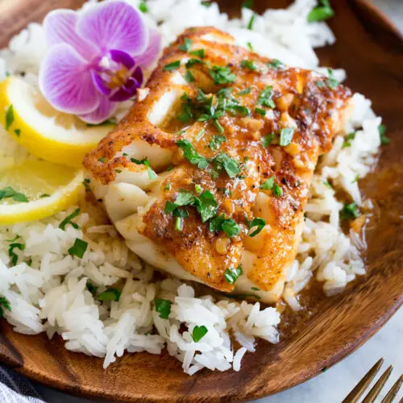

Lemon Butter Cod
- Total time25 mins
- Serves4
- Ingredients15
- Steps8

Ingredients
- 4 (6 oz each) cod fillets, skinless, about 1-inch thick
- 1 Tbsp all-purpose flour
- 1/2 tsp paprika
- 1/2 tsp onion powder
- 1/4 tsp dried thyme
- 1/4 tsp dried oregano
- 1/8 tsp cayenne pepper
- 3/4 tsp salt, or to taste
- 3/4 tsp freshly ground black pepper
- 5 Tbsp Danish Creamery Butter, cut into 1 Tbsp pieces, divided
- 1 Tbsp olive oil
- 1 Tbsp minced garlic
- 1 1/2 Tbsp low-sodium chicken broth
- 1 1/2 Tbsp fresh lemon juice
- 1 Tbsp chopped fresh parsley
Directions
- In a small mixing bowl whisk together flour, paprika, onion powder, thyme, oregano, cayenne pepper, salt and pepper.
- Sprinkle and spread flour mixture over both sides of the cod fillets (use up all of the mixture).
- Melt 1 Tbsp butter and 1 Tbsp olive oil in a non-stick skillet over medium-high heat.
- Add cod and sear until golden brown and cooked through on each side, about 3 - 4 minutes per side (fish should flake easily with a fork when done). Transfer to serving plates.
- Reduce burner temperature to medium-low. Melt remaining 4 Tbsp butter in same skillet.
- Add garlic and saute just until fragrant and just lightly deepened in color (but not browned), about 15 seconds.
- Remove from heat and carefully pour and stir in chicken broth and lemon juice (careful it will steam!).
- Immediately pour sauce over cod fillets. Sprinkle with parsley and serve warm.
Recipe credit: cookingclassy.com